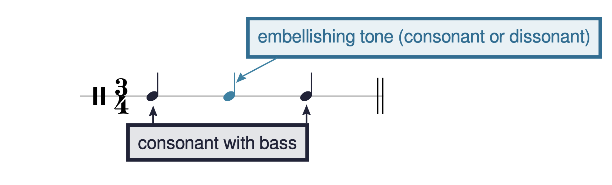

Open Music Theory：繁體中文版
裝飾性和弦外音
查看英文原文
Key Takeaways
- Embellishing tones can be grouped into three categories (summarized in Example 13):
- Involving only stepwise motion: passing tone, neighbor tone
- Involving a leap: appoggiatura, escape tone
- Involving static notes: suspension, retardation, pedal, anticipation
範例 1 再次呈現 Maria Szymanowska 的第6號進行曲，前面討論強屬前和弦時也看過這首作品。你可能注意到，第 8–10 小節低音中的某些音，不符合我們的和聲分析。範例 1 把這些音塗成藍色並圈出；它們統稱為「裝飾性和弦外音（embellishing tones）」，因為它們裝飾了屬於和弦的音。下文將它們分成三類介紹。
{kind=link}

- embellishing tone (consonant or dissonant)＝裝飾音，可能協和或不協和；
- consonant with bass＝與低音協和。
藍色箭頭指中間的裝飾音，黑色箭頭指首尾兩音。
幾乎所有情況下，裝飾音都位於三音音型的中間，第一個與最後一個音則和低音協和，如範例 2。中間的裝飾音本身，可能與低音協和，也可能不協和；不過，它幾乎總是不屬於當下和弦的音。
查看英文原文
Overview
Example 1 reproduces Maria Szymanowska's March no. 6, which we also saw in our discussion of strong predominants. You might have noticed that some of the notes in the bass in mm. 8–10 don't fit our harmonic analysis. These notes, which are blue and circled in Example 1, are collectively called “embellishing tones” because they embellish notes that belong to the chord. Embellishing tones can be grouped into three categories, which we describe below.
Example 1. Embellishing tones in Maria Szymanowska, March no. 6 from Six Marches (0:00-0:16).
In nearly all cases, an embellishing tone is the middle note of a three-note gesture in which the first and last notes are consonant with the bass (Example 2). The actual embellishing tone itself may be either consonant or dissonant with the bass. In almost all cases, however, the embellishing tone is a note that doesn't belong to the underlying chord.
範例 1 示範兩種以級進移動的裝飾性和弦外音：經過音（PT）與鄰音（NT）。經過音以級進進入，再沿相同方向級進離開，可以上行也可以下行，見範例 3。鄰音以級進進入，再沿相反方向級進返回，形成上鄰音或下鄰音，見範例 4。
範例 3。兩聲部織度中的經過音：（a）上行；（b）下行。
範例 4。兩聲部織度中的（a）上鄰音與（b）下鄰音。
查看英文原文
Passing tones, neighbor tones: Embellishing tones that move by step
Example 1 showed the two kinds of embellishing tones that move by step: passing tones (PTs) and neighbor tones (NTs). Passing tones are approached by step and left by step in the same direction, either ascending or descending (Example 3). Neighbor tones are approached by step and left by step in the opposite direction, producing either an upper neighbor or a lower neighbor (Example 4).
Example 3. Passing tones in a two-voice texture, (a) ascending and (b) descending.
Example 4. (a) Upper neighbor and (b) lower neighbor tones in a two-voice texture.
範例 5 與範例 6 示範兩種涉及跳進的裝飾性和弦外音：倚音（appoggiatura，APP）與逸音（escape tone，ET）。倚音以跳進進入，再反方向級進離開，如範例 7；它的拍位通常比前後音更強。逸音則以級進進入，再反方向跳進離開，如範例 8；它的拍位通常比前後音更弱。兩者都以下行離開較常見，如範例 7a 與範例 8a；上行離開較少見，如範例 7b 與範例 8b。
範例 6。Margaret Casson〈The Cuckoo〉中的逸音。
範例 7。兩聲部織度中的倚音。
範例 8。兩聲部織度中的逸音。
查看英文原文
Appoggiaturas and escape tones: Embellishing tones that involve a leap
Examples 5 and 6 show the two kinds of embellishing tones that involve a leap: appoggiaturas (APPs) and escape tones (ETs). Appoggiaturas are approached by leap and left by step in the opposite direction (Example 7). The appoggiatura typically occurs on a stronger part of the beat than its surrounding notes. Escape tones are approached by step and left by leap in the opposite direction (Example 8). The escape tone typically occurs on a weaker part of the beat than its surrounding notes. It is more common for appoggiaturas and escape tones to be left by motion downward (Examples 7a and 8a) than upward (7b and 8b).
Example 5. An appoggiatura in Joseph Boulogne, String Quartet no. 4, I, mm. 5–9 (0:09-0:19).
Example 6. An escape tone in Margaret Casson, "The Cuckoo."
Example 7. Appoggiaturas in a two-voice texture.
Example 8. Escape tones in a two-voice texture.
範例 9–11 示範四種同音停留型態中的三種：掛留音（SUS）、上行掛留音（retardation，RET）與持續音（PED）。第四種先現音，會在下文另外說明。
持續音常出現在低音聲部。它是一連串保持同音的音，上方和弦不斷更換，而這個低音並不屬於其中某些和弦。通常以持續音的音階級數標記，見範例 11。
範例 10。兩聲部織度中的（a）掛留與（b）上行掛留。
範例 11。Josephine Lang〈Dem Königs-Sohn〉，第 16–18 小節中的持續音。
查看英文原文
Suspensions, anticipations, and pedal tones: Embellishing tones involving static notes
Examples 9–11 show three of the four kinds of embellishing tones that involve static notes (i.e., notes that don't move): suspensions (SUS), retardations (RET), and pedal tones (PED). A fourth kind of embellishing tone, the anticipation, deserves special comment below.
Suspensions are approached by a static note and left by step down, while retardations are approached by a static note and left by step up (Examples 9 and 10). Both suspensions and retardations are always on a stronger part of the beat than the surrounding notes. (Suspensions are discussed in greater detail in the chapter on fourth species counterpoint.)
Pedal tones are often found in the bass. They consist of a series of static notes below chord changes that do not include the bass. We typically label them using the scale degree number of the pedal note, as in Example 11.
Example 9. Suspensions and a retardation in Joseph Boulogne's String Quartet no. 4, I, mm. 47–49 (1:30–1:36).
Example 10. (a) Suspension and (b) retardation in a two-voice texture.
Example 11. Pedal tone in Josephine Lang's "Dem Königs-Sohn," mm. 16–18.
Like the suspension, retardation, and pedal tone, anticipations also involve static notes. But anticipations are a two-note (rather than three-note) gesture, in which a chord tone is heard early as a non-chord tone (Example 12). In other words, it “anticipates” its upcoming membership in a chord.
Example 12. An anticipation in Josephine Lang's "Erinnerung," mm. 29–30 (1:54–1:59).
整理
範例 13 的表格彙整本章介紹的各種裝飾性和弦外音。
| 類別 | 裝飾性和弦外音 | 進入方式 | 離開方式 | 方向 | 補充說明 |
|---|---|---|---|---|---|
| 級進型 | 經過音（PT） | 級進 | 級進 | 同向 | 可上行或下行 |
| 鄰音（NT） | 級進 | 級進 | 反向 | 有上鄰音與下鄰音 | |
| 含跳進 | 倚音（APP） | 跳進 | 級進 | 反向 | 通常位於較強的拍位 |
| 逸音（ET） | 級進 | 跳進 | 反向 | 通常位於較弱的拍位 | |
| 含同音停留 | 掛留音（SUS） | 同音 | 級進 | 向下 | 一律位於較強的拍位 |
| 上行掛留音 | 同音 | 級進 | 向上 | 一律位於較強的拍位 | |
| 持續音（x̂ Ped） | 同音 | 同音 | 不適用 | ||
| 先現音（ANT） | 不適用 | 同音 | 不適用 | 通常位於較弱的拍位 |
範例 13。裝飾性和弦外音彙整。
- 裝飾性和弦外音（PDF、MuseScore 檔 .mscz）：在兩聲部織度中寫作裝飾性和弦外音，並辨識片段中的相關音型。練習單錄音。
媒體來源與授權
- 〈Generic_Embellishing_Tone_Layout〉© John Peterson，採用 CC BY-SA 姓名標示—相同方式分享授權。
查看英文原文
Summary
The table in Example 13 provides a summary of the embellishing tones covered in this chapter.
| Category | Embellishing Tone | Approached by | Left by | Direction | Additional Detail |
|---|---|---|---|---|---|
| Involving steps | Passing Tone (PT) | Step | Step | Same | May ascend or descend |
| Neighbor Tone (NT) | Step | Step | Opposite | Both upper and lower exist | |
| Involving a leap | Appoggiatura (APP) | Leap | Step | Opposite | Appoggiatura is usually on a strong part of the beat |
| Escape Tone (ET) | Step | Leap | Opposite | Escape tone is usually on a weaker part of the beat | |
| Involving static notes | Suspension (SUS) | Static note | Step | Down | Suspension is always on a stronger part of the beat |
| Retardation | Static note | Step | Up | Retardation is always on a stronger part of the beat | |
| Pedal Tone (x̂ Ped) | Static note | Static note | N/A | ||
| Anticipation (ANT) | N/A | Static note | N/A | The anticipation is usually on a weaker part of the beat |
Example 13. Summary of embellishing tones.
- Embellishing tones (.pdf, .mscz). Asks students to write embellishing tones in a two-voice texture and label embellishing tones in an excerpt. Worksheet recording
Media Attributions
- Generic_Embellishing_Tone_Layout © John Peterson is licensed under a CC BY-SA (Attribution ShareAlike) license